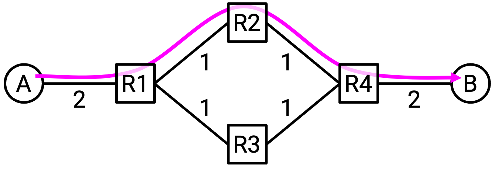
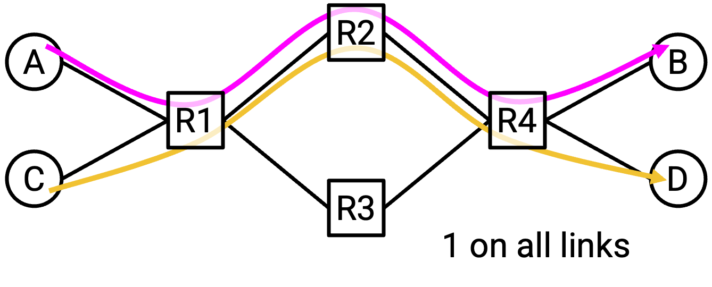
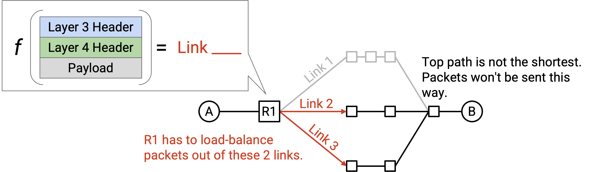
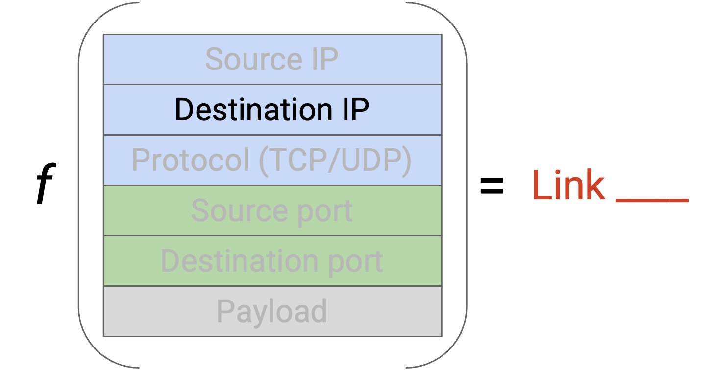
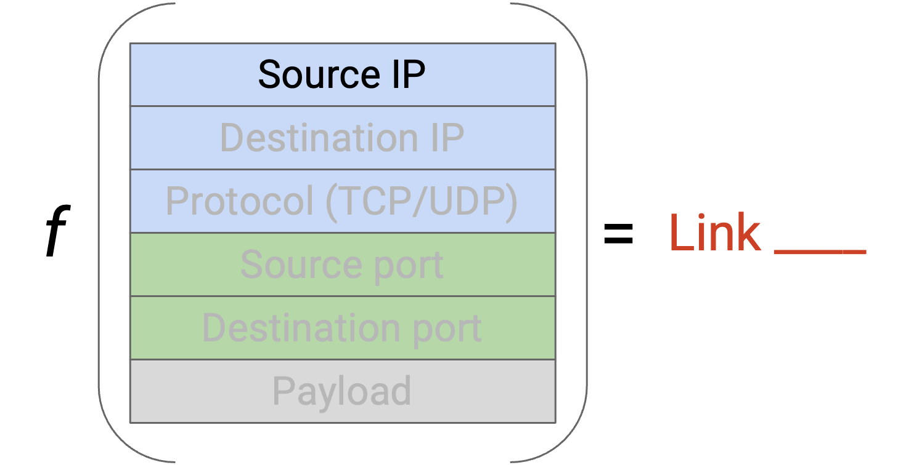
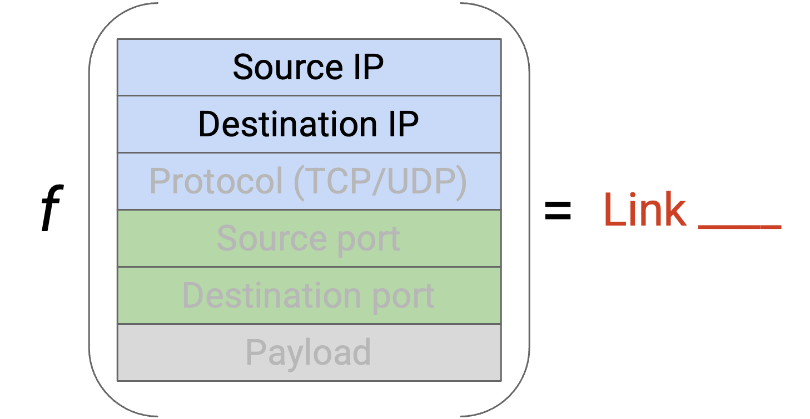
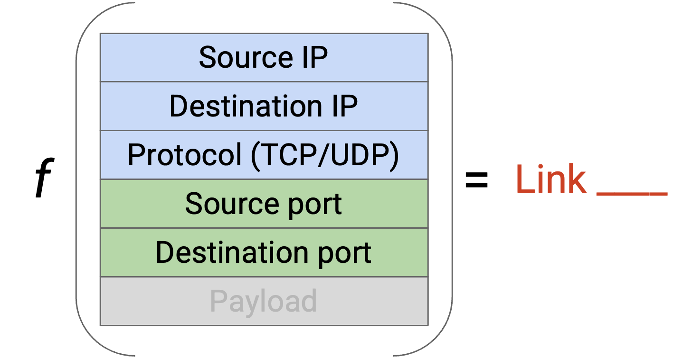
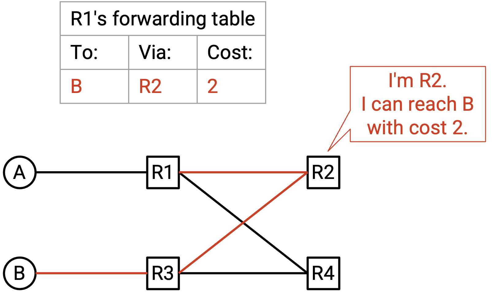
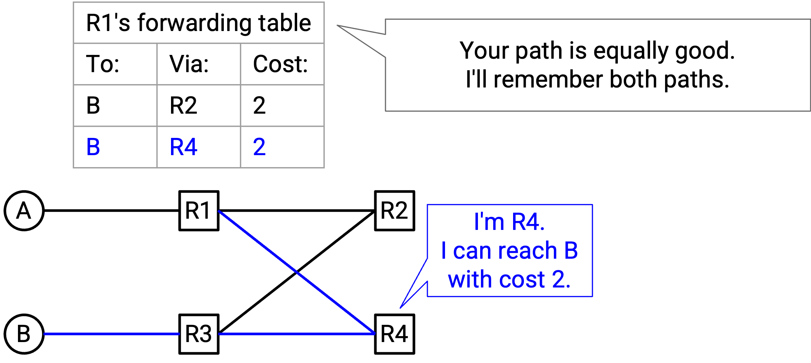

Datacenter Routing
Why are Datacenters Different?
In the previous section, we designed Clos networks, which created many paths between servers. Servers can communicate simultaneously at high bandwidth by using different paths through the network.
What problems occur if we apply our standard routing algorithms to these network topologies?
So far, our routing protocols pick a single path between a source and destination. If all our traffic uses the same path, we aren’t taking advantage of all the extra links in the Clos network. Ideally, we’d like to modify our routing protocols so that a packet can use multiple paths between the same endpoints.

Suppose that A and B have 200 Gbps uplink bandwidth, and the switch-to-switch links have 100 Gbps bandwidth. If all traffic between A and B is forced to take the green path, we’re leaving the red path unused. We could have sent data at full rate, if we allowed packets to take different paths.
Also, if there are multiple simultaneous connections, we’d like those connections to use different paths in order to maximize bandwidth.

Suppose that all links have 100 Gbps bandwidth. In this example, multiple connections are competing for bandwidth. If the A-B and C-D connections both pick the same path, the R1-R2 and R2-R4 links are overused (200 Gbps on 100 Gbps capacity). We could have sent data at full rate, if A-B and C-D used different paths.
Equal Cost Multi-Path (ECMP) Routing
In equal cost multi-path routing, our goal is to find all of the shortest paths (with equal cost), and load-balance packets across those paths.
If a packet arrives at a router, but there are multiple outgoing links that are all valid shortest paths, which link should the router choose? The router needs some function (think of it like a piece of code) that takes a packet, and outputs a choice of link. The function should properly load-balance traffic across the equal-cost paths.

One possible strategy is round-robin. If there are two shortest-path outgoing links, our function could say: send all odd packets along Link 1 and all even packets along Link 2.
What are some problems with this approach? Equal-cost paths doesn’t necessarily mean all paths have the same latency. (Remember, the costs are defined by the operator using whatever metric they like.) If we send all odd packets along a slow link, and all even packets along a fast link, then the TCP recipient might end up receiving all the even packets before the odd packets. TCP cares about reordering packets, so the recipient would be forced to buffer the even packets until the missing odd packets arrive, resulting in poor performance.
A smarter strategy would involve looking at some of the packet header fields, and using those fields to make some deterministic choice of link. What fields could we look at?
We could use the destination IP to select between shortest links. (We’re already using the destination IP in routing anyway.) But, what if lots of sources send packets to the same destination? All the packets have the same destination IP, so they all get mapped to the same shortest link. We aren’t load-balancing packets across the various shortest links.

What if we used the source IP to select between shortest links? We have a similar problem, if one source is sending packets to lost of destinations. All the packets have the same source, so they all get mapped to the same shortest link.

Instead of looking at only one field, we could look at both the source and destination IP. To load-balance between shortest links, we could hash the source and destination IP and map the resulting hash to a link (similar to how hash tables work). The source and destination IP together contain enough entropy to avoid our problems from earlier, where many connections with the same source or the same destination get mapped to the same link.

We still have one more problem: What if there are multiple large connections between the same source and destination? We don’t want all these connections to map to the same link. To solve this, we can additionally look at the source and destination ports in the TCP or UDP header.
More generally, all of the problems we’ve described (reordering in a TCP connection, too many connections on one link) can be solved if we place each connection on a separate link. To uniquely identify a connection, we need a 5-tuple of: (source IP, destination IP, protocol, source port, destination port). Note that we need the protocol to distinguish between TCP and UDP connections using the same IPs/ports. Two packets are part of the same connection if and only if they have the same 5-tuple.

By hashing all 5 values, we can ensure packets in the same connection use the same path (avoiding reordering problems), and we can load-balance connections across different paths. This approach is sometimes called per-flow load balancing. Modern commodity routers usually have built-in support to read these 5 values.
Per-flow load balancing ensures that each link is being used by roughly the same number of connections, though it doesn’t account for connections being different sizes. Accounting for connection size is technically possible, though it’s more expensive (routers would have to do more work) without a lot of benefit (per-flow does a pretty good job balancing different-sized connections), so this is not done in practice.
Multi-Path Distance-Vector Protocols
To maximize bandwidth, we should send packets along different paths, even if they’re going to the same destination (e.g. if the packets are part of different connections). This means we have to modify our routing protocols so that routers learn about all the shortest paths, not just one.
In standard distance-vector protocols, if we receive an advertisement for a new path with cost equal to the best-known cost, we don’t accept that new path. But, in order to remember all least-cost paths, we should actually accept that equal-cost path, and store both paths in the forwarding table. In the forwarding table, a destination can now be mapped to multiple next hops, as long as they all have the same minimal cost.

In this example, R1 receives advertisements from both R4 and R3, both advertising that they can reach B in 2 hops. Our forwarding table stores both R4 and R3 as possible next hops, both with equal minimal cost of 3.

When forwarding packets, the router hashes the 5-tuple to forward roughly half the connections to R3, and the other half to R2.
Multi-Path Link-State Protocols
In link-state protocols, we flood advertisements so that everybody has a full picture of the network. Normally, each node calculates a shortest path to each destination to populate the forwarding table. To support multiple paths, we need each node to instead compute all of the shortest paths for each destination.
As in the modified distance-vector protocol, the forwarding table can now contain multiple next-hops for a given destination.